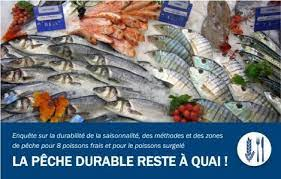

Pourquoi consommer des poissons issus de stocks durables :
La pêche durable « répond à nos besoins actuels tout en préservant les océans pour les générations à venir. ». Autrement dit, la pêche durable, c'est une pêche plus respectueuse des océans, qui consomme peu d'énergie, qui préserve les fonds marins et protège mieux les espèces de poissons.